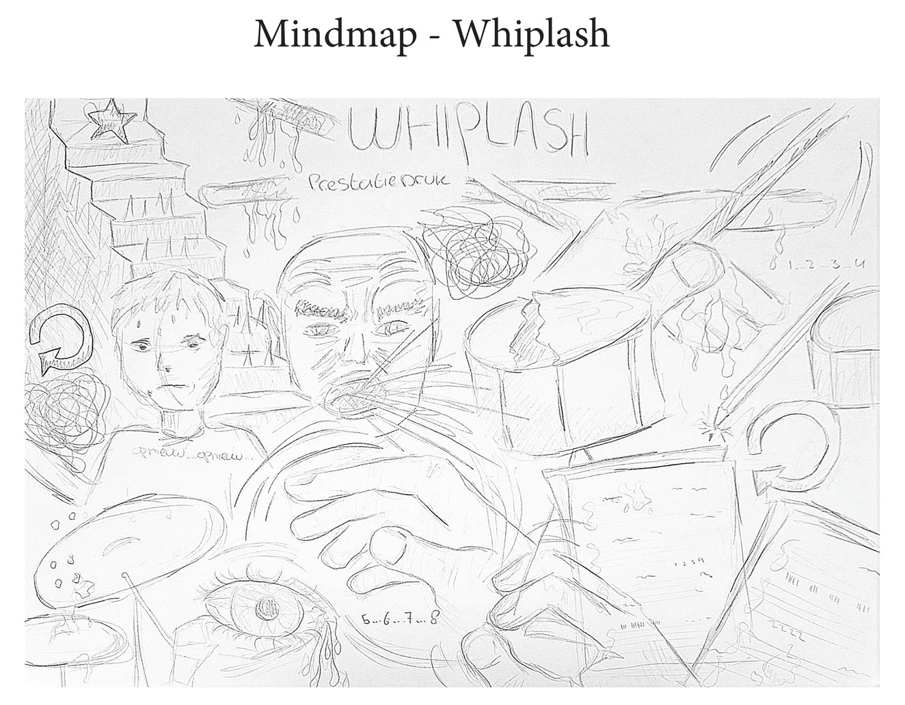

Mindmap Whiplash
Ik begon met een mindmap vol associaties over de film: prestatiedruk, snelle jazzritmes en de drang om foutloos te spelen.
In plaats van het drumstel zelf te filmen, leek het me veel interessanter om de frustratie erachter te laten zien: een potlood dat stomp wordt, bladmuziek vol krassen en gumsel dat overal op tafel ligt.
